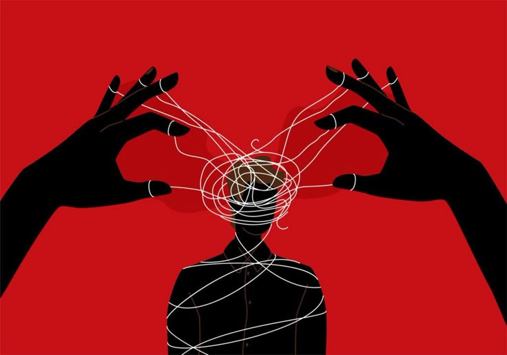

Seu Resultado Completo
"Você pode estar entregando sua estabilidade para os outros"
Antes de qualquer coisa, preciso te dizer o que esse resultado não é: não é sobre você amar demais, nem sobre ser uma pessoa fraca ou "grudenta". É sobre onde você aprendeu a buscar a sua própria estabilidade emocional, e, no seu caso, uma parte importante dela parece estar depositada fora de você, nas outras pessoas.
Esse padrão costuma se formar em ambientes onde, desde cedo, cuidar do outro (ou do clima emocional da casa) virou uma função sua, muitas vezes antes mesmo de você ter idade pra isso. Talvez você tenha crescido perto de alguém que precisava de cuidado, ou numa casa onde o seu bem-estar dependia de manter os outros bem. Isso ensina, sem que ninguém diga em voz alta, que o seu valor está ligado ao quanto você agrada, ajuda ou é necessário pra alguém.
Hoje, isso aparece assim: quando a relação vai bem, você vai bem, mas quando ela balança, tudo dentro de você balança junto. Você tem dificuldade de dizer não, de estabelecer limites, ou de pedir ajuda sem se sentir culpado. Às vezes permanece em situações que machucam porque o medo de ficar sozinho pesa mais do que o desconforto de ficar.
Um mal-entendido comum: achar que a solução é parar de se importar com os outros. Não é isso, e provavelmente nunca vai ser. O problema não é a intensidade do seu cuidado, é o apagamento de você mesmo dentro dele. Existe uma diferença entre amar alguém profundamente e desaparecer pra sustentar essa relação.
O caminho começa em construir uma base de autoestima que não dependa da aprovação de ninguém, aprender a reconhecer as suas próprias necessidades antes de atender às dos outros, e praticar limites que venham dos seus valores, não do medo. Cuidar bem de alguém e cuidar de si mesmo não deveriam ser escolhas opostas.
"Eu preciso ser escolhido para me sentir bem."
Dra. Aline Zanette
Médica · Saúde Mental · CRM 36587
Ferramenta de autoconhecimento. Não é diagnóstico médico ou psicológico e não substitui avaliação individual realizada por profissional habilitado.